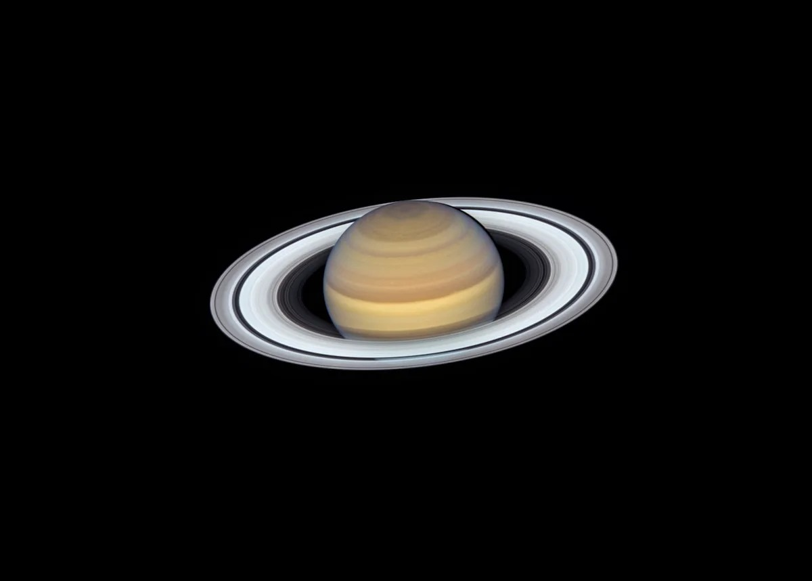
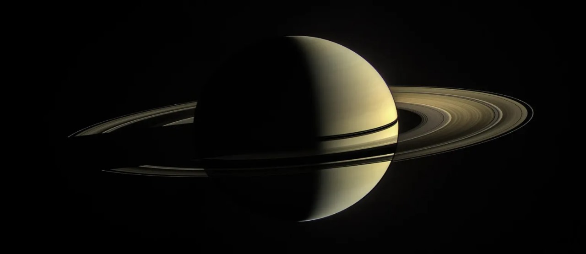
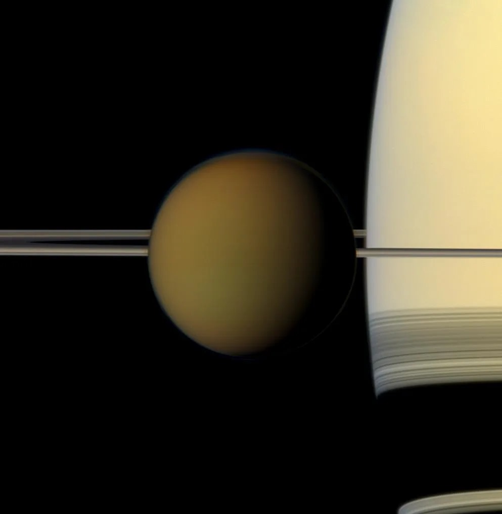
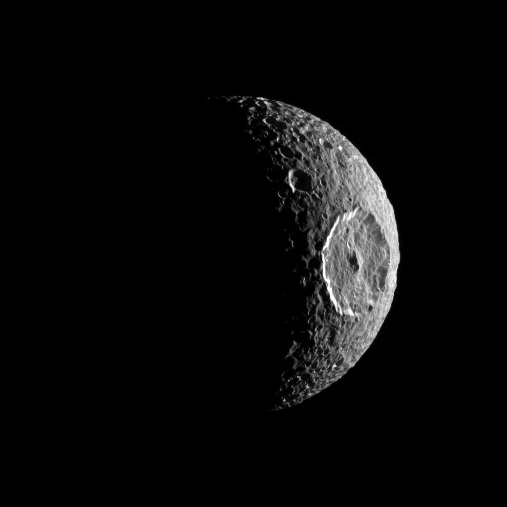
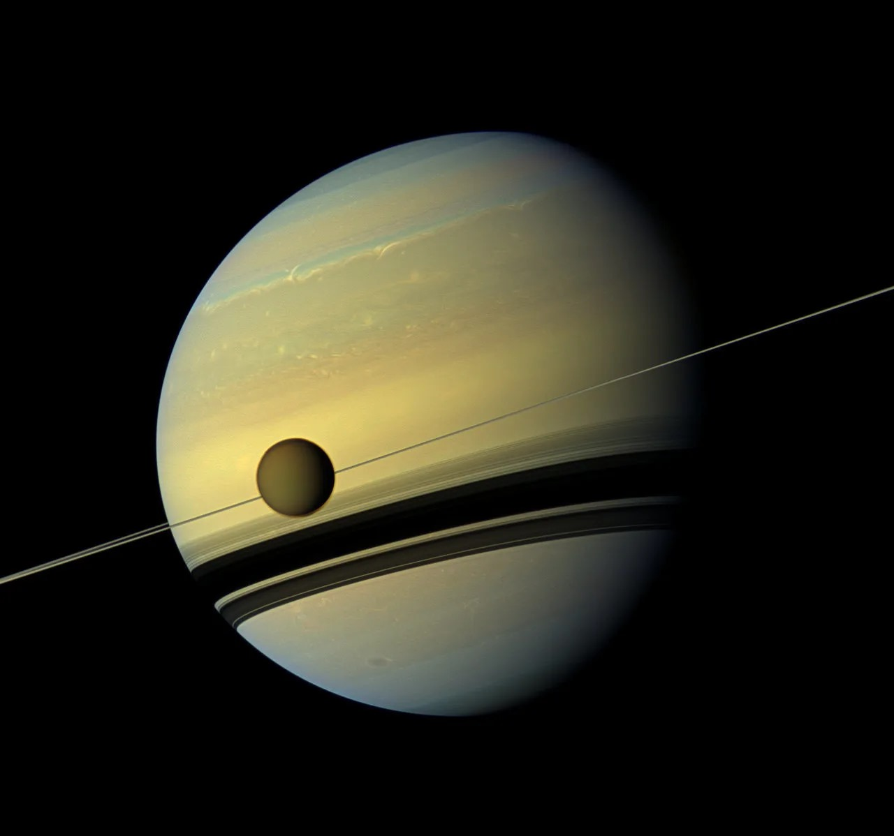
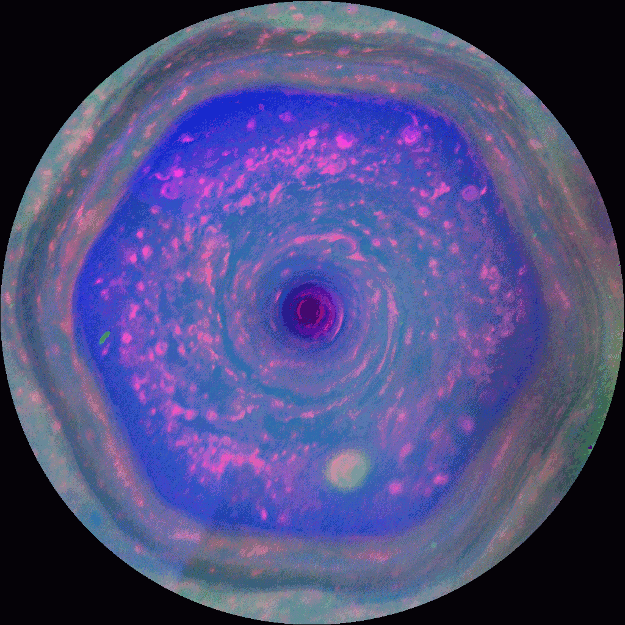

Saturn
Saturn is the sixth planet from the Sun, and the second largest in the solar system.
It’s surrounded by beautiful rings.

Second Largest
Nine Earths=Saturn's diameter

Sixth from sun
It is 9.5AU from sun

Long Year
29Earth year for saturn to orbit sun

No surface
It have small core

King of Moons
Saturn has the most:146

Not Suitable for life
Saturn can't support life

Cloud Hexagon
A powerful jet stream shapes the clouds